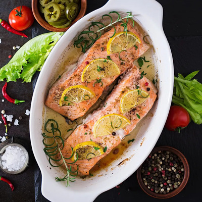
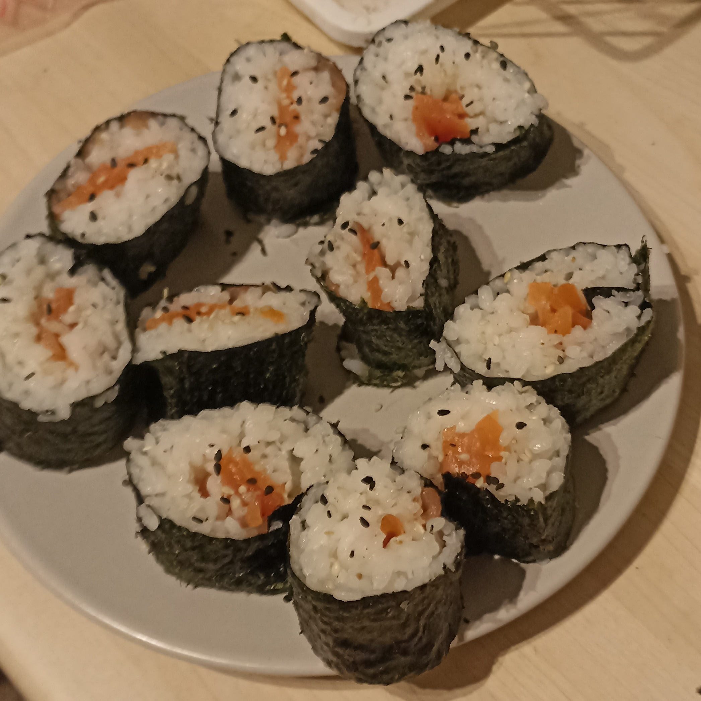
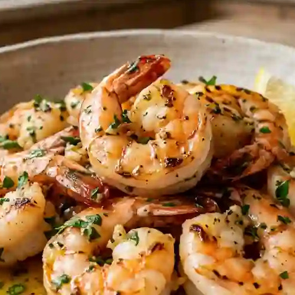

-
Pavés de saumon

Ingrédients
- Pavés de saumon
- 1 cuillère à soupe d'huile d'olive
- Pincées de sel et poivre
Préparation
- - Placer les pavés dans un petit plat
- - Les arroser d'huile d'olive
- - Saler et poivrer
- - Faire cuire au four pendant 20 minutes à 180°C
-
Makis

Ingrédients
- 200g de riz japonais
- Feuilles de nori
- Crevettes équeuttées ou saumon
- Graines de sésame
Préparation
- - Rendez-vous sur les bases culinaires pour la cuisson du riz !
- - Mettre une feuille de nori à plat sur la natte de bambou
- - Mettre du riz par dessus
- - Rajouter les crevettes sur une rangée
- - Rouler bien serré les makis à l'aide de la natte en bambou
- - Découper le rouleau afin d'avoir des makis
- - Une fois en place, parsemer de graines de sésame
-
Crevettes persillade

Ingrédients pour environ 4 personnes
- 1kg de crevettes entières ou 700g de crevettes décortiquées
- 4-6 brins de persil
- 1 pincée de sel et de poivre
- 200g de beurre
- 3-5 gousses d'ail
Préparation
- - Préparer les crevettes si besoin
- - Emincer ou presser les gousses d'ail
- - Hacher le persil
- - Faire fondre complètement le beurre dans une poêle
- - Ajouter le persil, les gousses d'ail, le sel et le poivre puis mélanger
- - Une fois que l'ail commence à brunir, ajouter les crevettes
- - Retourner les crevettes jusqu'à obtenir une belle coloration de chaque coté
- - Servir une fois que l'ail a bruni complètement